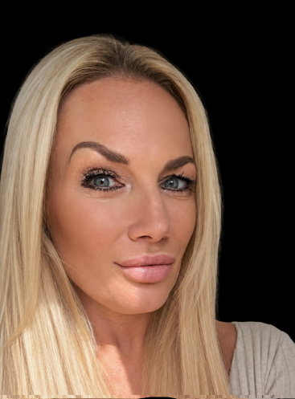
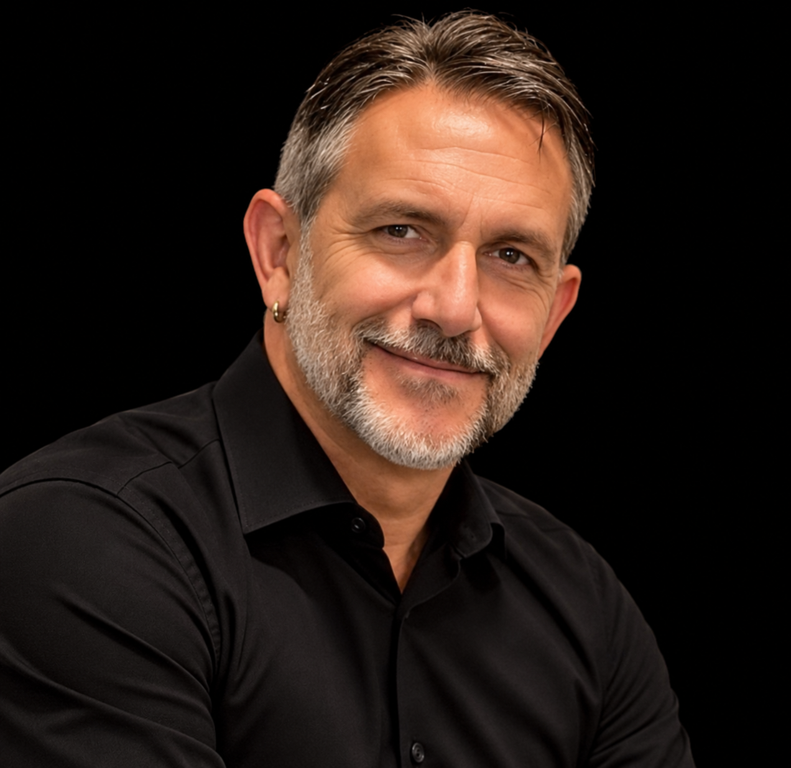
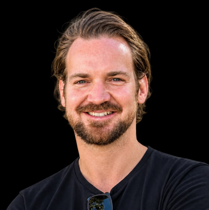

Meet The Health Squad

Karen
Founder of Healthy Starts for Schools
I'm Karen, a mum of three with a personal passion for helping the next generation have a healthier start in life.
- My own health experiences have shaped how much I value looking after ourselves today and thinking about our health future, inspiring me to bring people together around a purpose that matters to me: our children’s wellbeing.
- I’ve developed Healthy Starts for Schools to bring schools and families together, encourage conversations about nutrition and explore practical ways to support children’s everyday diets.
- As a parent, I understand that busy routines, different appetites and food preferences can make this challenging. I want families to feel supported, informed and included.
- Building healthier futures for generations to come
"My ambition is to build something meaningful for our children today and the generations who follow them. By helping lay the foundations for a healthier UK, our long-term aim is to improve people’s health and ease pressure on our NHS."

Keith
Health Crew Ambassador & Co Founder
I'm Keith, a father of two children who have lived with severe allergies since birth, I’ve spent years navigating a world that often isn’t built for them. Dozens of trips to A&E, countless appointments at allergy clinics, and the constant vigilance around food have shaped our everyday life. Something as simple as eating out, or even thinking about going abroad became risky, stressful, and in many cases, simply not possible..
- Years of real-world experience managing severe allergies
- Passionate advocate for food awareness and education
- Committed to helping families make informed food choices
- Promotes healthier lifestyles through leading by example
"Through education, awareness and making healthy choices fun, we can inspire positive change together."

John
Health Crew Ambassador & Lifestyle Coach
I'm John. I’ve been involved in sport since I was a child, so it felt natural to follow a path into exercise, nutrition and performance. While studying for my Sports Science degree, I worked as a special needs assistant and in an after-school club at a primary school. After graduating, I became a personal trainer and later started my own bootcamp studio. In 2009, I came across a unique product that was part of a free nutrition programme for children. I truly believe that good nutrition and exercise are the foundations of a great life especially for children. When I worked at the school, I could see how nutrition affected children’s behaviour and energy levels.
- Personal Trainer / Sport science (BSc)
- Professional Lifestyle Coach
"That’s why I’m so passionate about promoting the Healthy Starts for Schools programme".